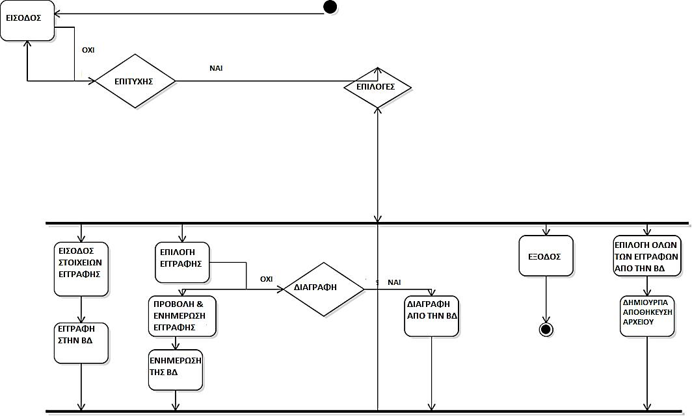

Thesis Project
Analysis, Design and Implementation of a "Movie Quiz" game in Android
Thodoris Bais
Supervisor: Minas Dasygenis
27-10-2015 | ICTE UoWM
Laboratory of Digital Systems and Computer Architecture
Outline
System Introduction
We wanted a multiplayer game, where:
- the database could be easily updated
- the server could run locally
- the game could provide enough configuration options
- questions were taken from IMdB
...following the standards of a modern multiplayer game
So, what is the main concept of your thesis?
The problem
IMDB Api provides weird-formatted datasets
The solution
Features
- HTTP Requests
- Search by title
- Search by imdb id
- XML / JSON
Scrapper - Implementation
A script that converts a text file containing movie titles to an SQLite database

Scrapper - DB schema

Only one table?
Development Stages
Requirements Engineering
- Database Creation
- System Architecture
- Mockups
- FSM Diagrams
- Use Case Diagrams
- Sequence Diagrams
- Protocol Messages
Development Stages
Design Engineering
- Android Server Development
- Android Client Development
- Admin Website Development
- Manual Testing
Requirements Engineering
System Architecture
Requirements Engineering
Mockups - Server
Requirements Engineering
Use Case Diagram - Server
Requirements Engineering
Sequence Case Diagram - Server
Requirements Engineering
FSM - Server in Singleplayer Mode
Requirements Engineering
FSM - Server in Multiplayer Mode
Requirements Engineering
Mockups - Client
Requirements Engineering
Use Case Diagram - Client

Requirements Engineering
Sequence Case Diagram - Client

Requirements Engineering
FSM - Client
Protocol Messages
A typical flow
► Client inserts a nickname
MESSAGE::CONNECTION ACCEPTED
NICKNAME::OK
CONFIG::gameType<>helpPhoneMode<>helpAudienceMode<>
helpHalfMode<>maxAnswerTime<>timeRemaining<>NickName<>
correctScore<>informOtherPlayers<>scoreVisible
Protocol Messages
Continuing the typical flow
GAME_STARTING
NEW_QUESTION::question<>answer1<>answer2<>
answer3<>answer4<>
answer5<>correct
NICKNAME::ANSWER::QUESTION
Design Engineering
Server Implementation
So what?
Server is now set to listen to incoming connections, so the ball goes to client...
Design Engineering
Client Implementation
Time Left? For what?
If no error returned, the client is connected and waits for the server to start the game...
Hey, Mr. server, start the game, I'm in!
....but wait, how does the server know if players are actually connected?
"Ok, perfect", I've got 2 players, let's start!
Question is simultaneously sent to clients
Key Points of Design
Android Development
- ServerSocket class to establish connections
- Send messages using the PrintWriter class
- Read messages using the BufferedReader
- Synchronized threads
- Asynchronous Tasks
- Custom UI
ServerSocket establishes connections
@Override
public void run() {
synchronized(this){
this.runningThread = Thread.currentThread();
}
// create ServerSocket using specified port
serverSocket = new ServerSocket(PortNumber);
while (running) {
new ThreadHandler(serverSocket.accept()).start();
}
}
PrintWriter sends
private BufferedReader in;
in = new BufferedReader(
new InputStreamReader(
socket.getInputStream()
)
);
/* Sending messages */
out.println("MESSAGE::END_OF_GAME=="+scoreMessage);BufferedReader reads
private PrintWriter out;
out = new PrintWriter(socket.getOutputStream(), true);
/* Reading messages */
in.readLine();
Android part's over...
Let's go to the web app
Requirements Engineering
Use Case Diagram - Web Application
Requirements Engineering
Sequence Diagram - Web Application
Design Engineering
Implementation - Web Application
Security
has been ensured in the web application, using:
- PDO for prepared statements
- Sanitization functions for input filtering
Prototyping
Mockups - WireframeSketcher

Debugging
The embedded logger is unstoppable, irrelevant and snob
So?
Alternative Debugging
Android Device Monitor
Quality Assurance
Task Management - Trello
Quality Assurance
Build Tool
Quality Assurance
Code Metrics - cloc
Conclusions
- An Android app can function as a server, if threads are handled properly.
- This is about a modular project.
- Low maintenance cost in comparison with remote server machines.
Future Extensions
- Automated Testing
- User Interface
- Preparser
- Thread/Exception Handling
Thanks!
Questions?